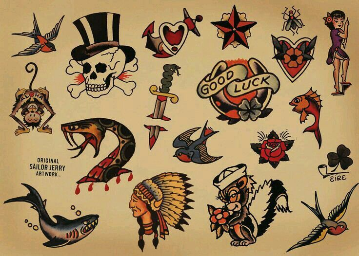
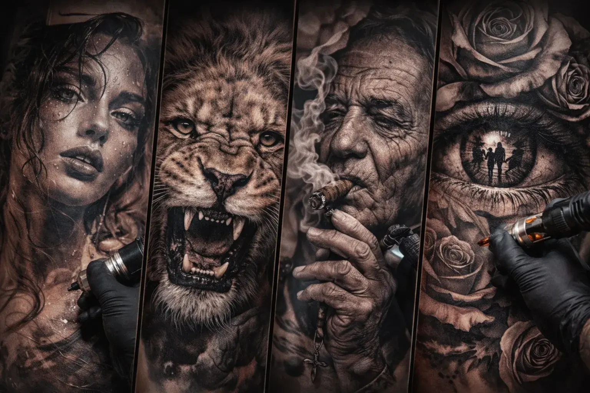
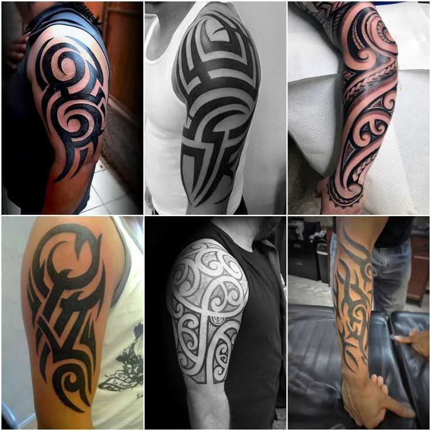
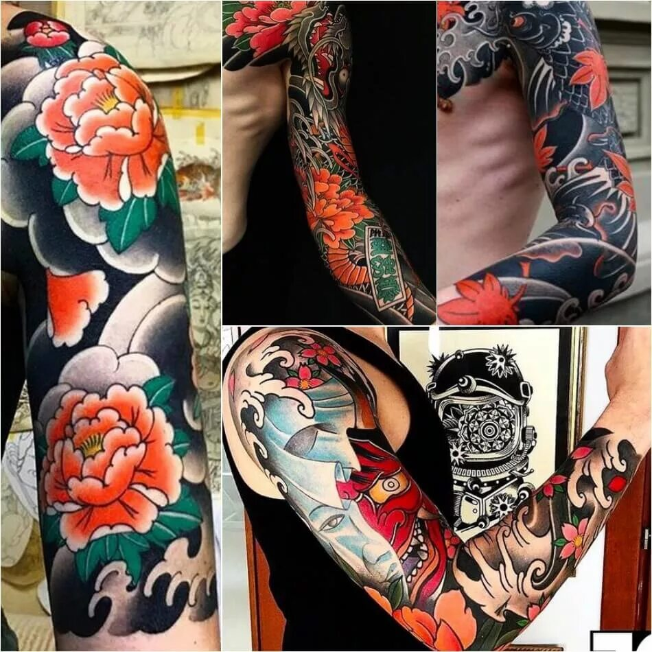
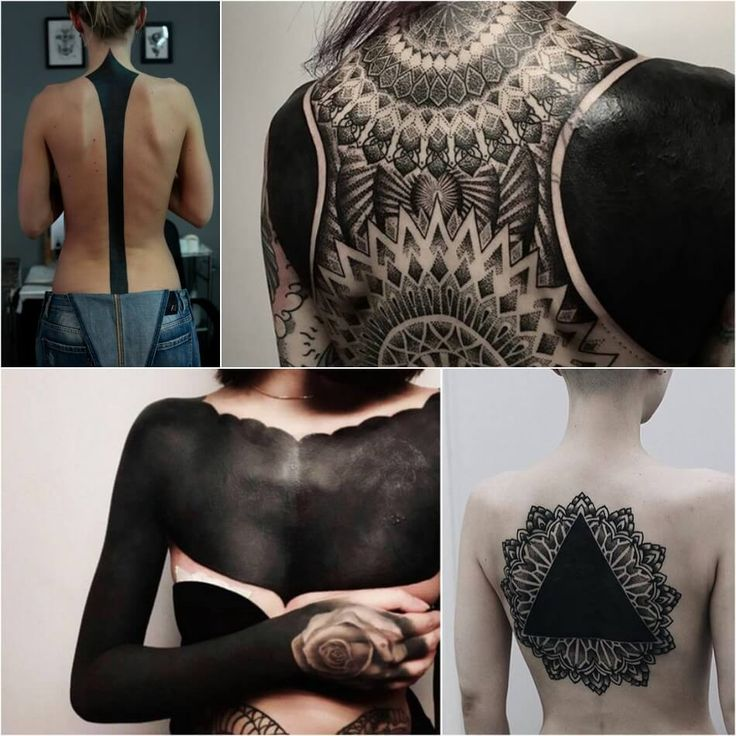
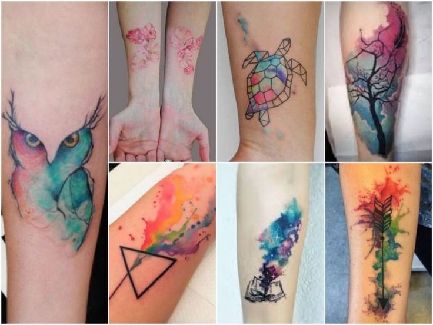
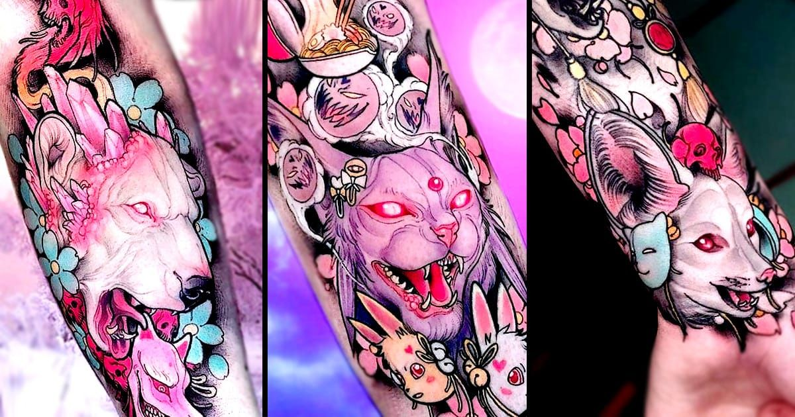
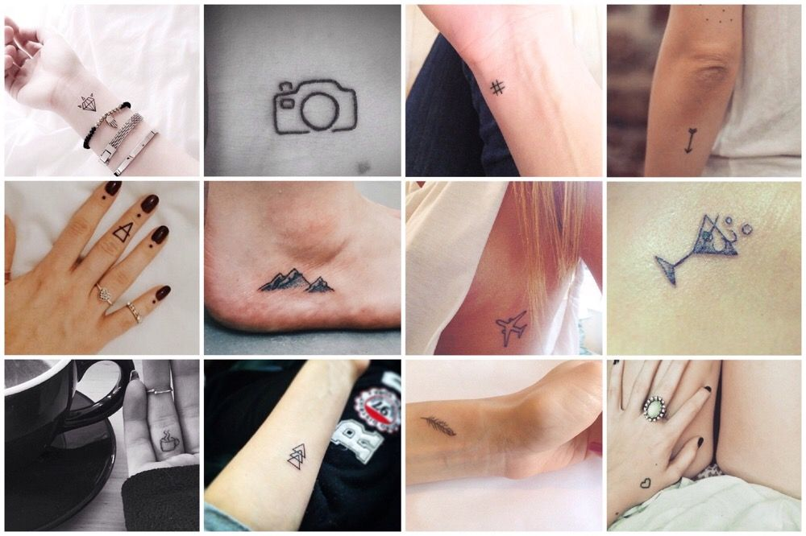

Стили тату: от классики до авангарда
Гид по 8 главным направлениям тату-искусства — эстетика и техника.
Направления тату-искусства.
Каждый стиль - это отдельный язык.

OLD SCHOOL
Жирные контуры, смелые цвета, классические морские мотивы. Зародился в среде американских моряков начала XX века.

РЕАЛИЗМ
Фотографическая точность и глубина. Тату выглядит как живая фотография или картина маслом.

ТРАЙБЛ
Геометрические узоры с корнями в полинезийской культуре. Каждый элемент несёт смысловую нагрузку.

ЯПОНСКИЙ
Сложные композиции с карпами кои, самураями и сакурой. Богатая символика и многовековые традиции.

BLACKWORK
Только чёрная тушь. Смелые геометрические блоки, дотворк и орнаменты. Максимальный контраст.

АКВАРЕЛЬ
Имитирует акварельную живопись — размытые края, яркие переходы цвета, эффект свежести.

НЕОТРАДИШН
Эволюция Old School: более детализированный, широкая цветовая палитра, современные сюжеты.

МИНИМАЛИЗМ
Тонкие линии, геометрия, изящество. Принцип «меньше — значит больше» в тату-искусстве.
Как найти свой стиль?
Три главных вопроса, которые помогут определиться.
Что тебе близко?
Определись с настроением: классика, авангард, природа или геометрия? Ответ на этот вопрос сужает выбор вдвое.
Где будет тату?
Место на теле влияет на стиль. Мелкие детали лучше видны на запястье, крупные форматы — на спине или бедре.
Проверка временем.
Тату навсегда. Проживи с идеей месяц. Если желание не прошло — найди мастера и вместе доведите концепцию до финала.
На что обратить внимание при выборе мастера?
Портфолио
Изучи работы минимум за последние 6 месяцев. Мастер должен специализироваться именно в нужном тебе стиле.
консультация
Хороший мастер расспросит о тебе, предложит варианты расположения и откорректирует идею.
Стерилизация
Только одноразовые иглы и стерильные материалы. Это не опция — это обязательный минимум безопасности.
Отзывы
Реальные фото зажившего тату ценнее свежих снимков. Заживление показывает истинное мастерство.
Готов к своему первому тату?
Запишись на консультаицию - мы поможем выбрать стиль и найти мастера.